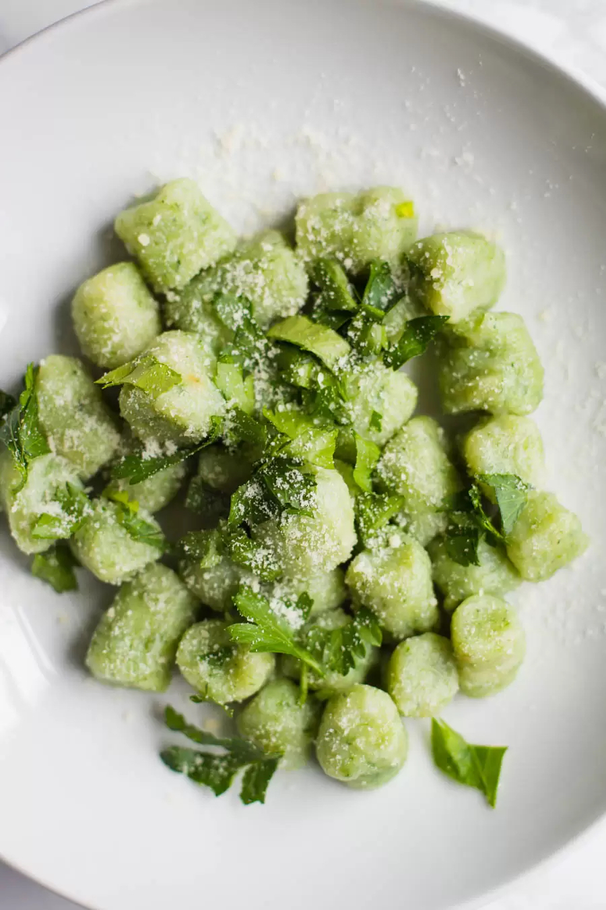

Spinach Gnocchi

Let's talk about gnocchi
The simplest way to think about gnocchi is like a type of
pasta - they're usually found near each other in the grocery
store - in that it's typically served with any manner of sauce.
Once boiled or simmered, they transform into soft little dumpling
pillows with an almost cloudlike texture.
In sum: they're sublime - and definitely worth preparing!
Ingredients
- 2 Pounds of golden potatoes
- 3 Ounces of fresh spinach (can also use frozen),
for the fresh spinach it ends up being about 4 tightly
packed cups of spinach
- 1/2 Teaspoon of salt (optional)
- 1 1/4 Cups of all purpose flour
Instructions
- Pre-heat the oven to 400 degree F. Using a fork, pierce the potatoes
all around and place on a foil lined baking sheet.
Bake for 50-60 minutes or until the potatoes are very tender in the center.
- Once out of the oven, let the potatoes cool until you can handle them.
Scoop the potatoes out of the skins and place into a potato ricer. If
you don't have a ricer, then mash the potatoes with a fork until well
combined and broken down. Let sit to cool.
- In a medium pot, boil water. Place the spinach into boil for 3 minutes.
Drain and place the spinach in a food processor or high speed blender and
blend until pureed. If needed, add a splash of water in to help the spinach blend.
- Once the potatoes are completely cooled, pour half of the pureed spinach onto the riced potatoes.
Pour the flour and all of the salt on top of the spinach. Using a fork or your hands, mix
it all together. Add in a bit more spinach, a few tablespoons at a time, until
it is all added. The finished dough should resemble cookie dough that's just
slightly sticky but easy to handle. If it's too sticky, add a bit more flour.
- Once fully combined, roll the dough into a ball and cut it into 8 even pieces.
Roll each piece into a long log that's about 1/2 an inch thick. ut the gnocchi into
1 inch pieces. Gently toss each piece into flour to ensure that it's dry and not sticky
at any edges. Continue until you've cut out pieces from all of the dough.
- Optional: using a gnocchi board or fork, press grooves into each piece of gnocchi.
- The gnocchi can be stored in the fridge for days, the freeze for a few weeks, or
cooked right away.
To cook the gnocchi:
- Heat a pot of salted water to a boil. Add in the gnocchi and let cook
for a couple minutes. Once the gnocchi floats to the surface of the water,
let it boil for 30 more seconds and then remove it from the water using
a slotted spoon.
- Toss in your favorite sauce and ENJOY! For spinach gnocchi, simple
tomato sauce will be an excellent choice, all sprinkled with a bit of parmesan
cheese.
Credits:
Return to the top
Return to main page